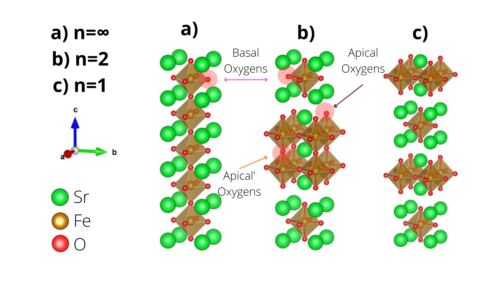

"Highly organized research is guaranteed to produce nothing new!"
Research
Electronic Structure of Highly Correlated Materials.
The electronic structure of a multielectronic system is what determines the vast majority of a material's physical and chemical properties.
In my research, I focus on determining the electronic structure of materials belonging to the class of transition metal oxides (TMOs). These consist on combinations of elements from the middle of the periodic table, the transition metals, and oxygen, but also frequently feature pre-and post transition elements. These show remarkable properties such as exotic magnetic ordering, metal-insulator transitions and even superconductivity. In order to study these systems, I make theoretical calculations in the framework of Density Functional Theory, which allows us to simulate these materials with a high degree of accuracy with methods derived from first principles ab initio.
Currently, I am working on the effects of dimensionality on a set of highly correlated materials known as Ruddlesden-Popper series, characterized by the general chemical formula Srn+1TMnO3n+1, where TM is a transition metal such as Fe, Ni or V. They can be understood as vertical stacking of n perovskite structures SrTMO3 interweaved between strontium oxide SrO film layers. An ideal strontium perovskite consist of a cube with strontium atoms at the edges with a face-centered octahedra of oxygens inside it, housing the transition metal atom at it's center. It is known that by changing n in the series, one has a transition from a 3D material with only perovskites (n = ∞ ) towards a fundamentally 2D material (n = 1 ), whose chemical and physical properties are confined along the ab plane of the crystal. My work is focused on elucidating the consequences of this progressive 2D confinement on the material's electronic structure and it's magnetical ordering.
Extension
-
CIÊNCIA SURREALISTA: o uso das obras de Salvador Dalí para a discussão de Relações CTS e Física Moderna
In: Ivanilda Higa, Caroline D. Pereira Portela, Débora Larissa Brum Iankie, Gabriel Milani Karine Karsten, Luiz Gustavo Pampu, Raquel M. Tomé Gonçalves, Sheila Sudul Marafigo. (Org.). A PRODUÇÃO DO CONHECIMENTO NA FORMAÇÃO INICIAL DE PROFESSORES propostas para o ensino elaboradas por licenciandos em Física. 1ed.Curitiba: CRV, 2022, v. 4, p. 19-32.
DOI: 10.24824/978652513344.7
Simulation
During my undergrad, I worked a bit with dynamical systems applied to biology under the mentorship of Prof. Sabrina de Araujo (UFPR) . Our focus was to model the effects of ecological invasion between two competing species following spatially discrete and averaged approaches, that is, how the description of the sites alters the dynamics of the species. This was motivated by the increasing need of computational simulations in biology to allow the analysis of the influence of specific parameters that might be very hard to manipulate in an experimental setting. One of the approaches we used was the very well known Cellular Automata model, in which space is treated as a matrix whose elements represent sites, which can be singly occupied by the native species (1), invasive species (2) or empty (0). The parameters we used for this model are sub hx,y, the birth rates of the native (x) and invasive species (y), their death rates dx,y and an additional parameter iy which represents the propagule pressure of the invasor. This parameter is associated with the number of invasion events and the number of individuals released in each event, here referring to an additional probability of the invasive species to occupy the empty spaces. As there is no predation being taken into account, both species can only occupy empty spaces, which may become vacant when after their deaths.
Below is an interactive simulation of this model with the parameters available for adjustment, feel free to play around! As it can be seen, the dynamics is quite rich and also visually interesting. For more details on the model and the subsequent analysis of the results, you can check the final report of this undergrad research here (available only in portuguese).